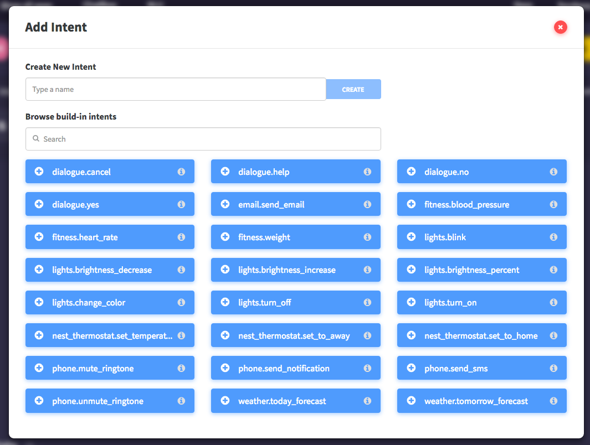
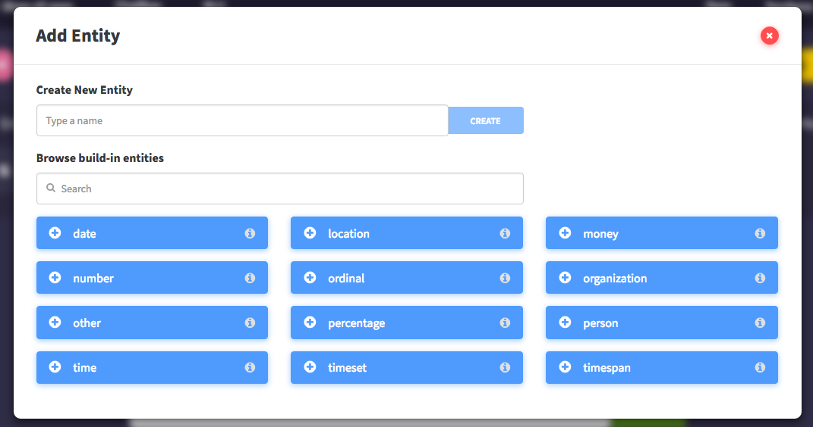

Intents and Entities¶
Table of Contents
Introduction¶
NLU is a Natural Language Understanding engine classifying utterances by intents and extracting content from uttereances called entities. In this section of the documentation, we will discuss in more detail about these two key components of NLU.
Intents¶
Intents are utterance classes that capture the main communicative intent of the input utterance. For example, the intent dialgoue.yes captures the communicative intent of many utterances, such as “I agree”, “yes”, “of course”, “yes, I agree”, and “I think so too”.
The intent vocabulary or Sample Utterance consists of an arbitrary number of arbitrary strings. These intents can be thought of as buckets in which each incoming input utterance will be placed by the NLU node.
NLU contains some predefined intents which you can use in your NLU app. These intents already contain sample utterances and are ready to be integrated as is. However, you can add more examples if you wish.
Entities¶
In addition to one intents, each utterance may contain zero or more entities or subunits of an utterance that contain key information. Common examples of entities include locations, names of organizations, and prices.
The entity vocabulary or Phrases consist of an arbitrary number of words. NLU will search each utterances for these Phrases. In addition, entities can be learned as a place or occurance in the utterance. For example, in the utterance “I want seafood in downtown seattle.”, NLU learned that the location entity always occurs after the preposition “in”.
Warning
You must train your model over a large dataset in order to have your NLU app learn where in the utterance a specific entity will occur.
NLU contains some predfinied entities which you can use in your NLU app. These entities already contain sample phrases and are ready to be integrated as is. However, you can add more examples if you wish.
NLU Input and Output¶
NLU takes in an string Input and outputs the following Output:
{
"tokenized_sentence": "utterance",
"intents": [
{
"score": intent_probability_score,
"intent": "intent_type"
},
],
"entities": [
{
"text": "text",
"end": endpoint,
"start": startpoint,
"entity": "entity_type"
},
],
"sentence": "utterance"
}
A Classification Example¶
- Consider, the following utterance:
- *“Please make me a reservation for six people at Matsuhisa at 7 pm.” *
The intent here may be make_restaurant_reservation, and the entities may be party_size (corresponding to the word “six”), restaurant_name (corresponding to the word “Matsuhisa”) and time (corresponding to “7 pm”).
Note
These assignments are made in the context of the current utterance. The word “six” could be a time in a different utterance (“I need a reservation at six”). It is the job of the NLU to assign the right entities and intents in each utterance.
Definitions¶
- Intent
- Utterance classes that capture the main communicative intent of the input utterance
- Entity
- Subunits of an utterances that contain key information we can use in our applications.